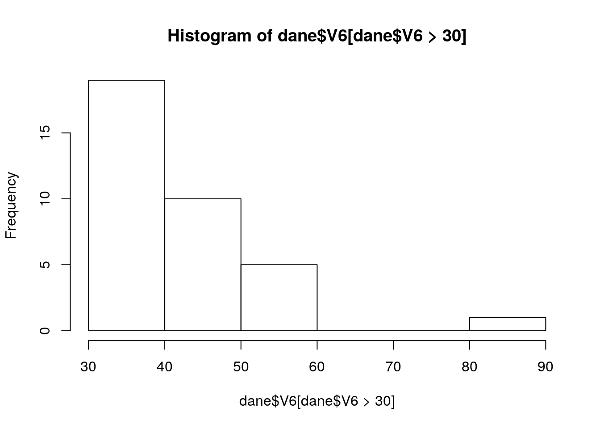

Rozdział 5 Wczyt i zapis danych
Elementarną umiejętnością pracy na danych w R jest możliwość zaczytania wybranego/dowolnego formatu oraz dalsza praca już na danych dostępnych w środowisku R/RStudio. Prawdopodobnie dotychczas dane zapisywałeś(aś) w formatach arkuszy kalkulacyjnych (xls/xlsx/ods). Tymczasem w naukach atmosferycznych jest to w rzeczywistości jeden z najrzadziej wykorzystywanych formatów…
R obsługuje bardzo szeroką gamę formatów danych, a te które nie są natywnie wspierane zwykle mogą być zaimportowane do R za pomocą bezpłatnych bibliotek. W ten sposób w R można jednocześnie pracować w jednym środowisku na różnych danych, bez konieczności przełączania się za każdym razem do programu obsługującego dany format lub posiadającego dane możliwości (np. pobranie danych -> przygotowanie danych przestrzennych -> wizualizacja w postaci mapy).
W naukach atmosferycznych najczęściej stosowane formaty danych obsługiwane przez R to:
- Dane przechowywane w formie “tabelarycznej” (np.:
csv,ASCII,xls/xlsx,GoogleSheetsoraz w postaci bazodanowej (np.SQLi pochodne)). - Formaty danych specjalistycznych GIS: (np.
HDF4, HDF5, GeoTIFF, Shapefile, ASCi innych wspieranych przez bibliotekęGDAL). - Specjalistyczne formaty danych meteorologicznych (np.
GRIB, NetCDF-3, NetCDF-4).
5.1 Katalog roboczy
Zanim przejdziemy do wczytywania danych musimy zaznajomić się ze sposobem ustalania katalogów roboczych R. Domyślnie po uruchomieniu R pracujemy w katalogu domowym, który może być zlokalizowany w różnych miejscach dysku. Aby sprawdzić obecny katalog roboczy (ang. Workind directory) należy posłużyć się funkcję getwd() bez żadnych dodatkowych argumentów
getwd()## [1] "/home/bartosz/github/przetwarzanie"Jeśli chcemy zmienić katalog roboczy możemy to zrobić na 3 różne sposoby:
Użyć funkcji
setwd()podając ścieżkę do wybranego katalogu (wersja zaawansowana)Wybrać z górnego menu RStudio opcję
Session, następnieSet working directoryi następnieChoose directory, analogicznie do zrzutu na poniższym ekranie. Ważne aby ustawić jedynie KATALOG a nie PLIK w którym będziemy pracować i przechowywać nasze dane. Po poprawnym wskazaniu katalogu roboczego w konsoli pojawi się wynik działania jako wywołana funkcjasetwd()ze wskazanym katalogiem.Analogiczny efekt jak w pkt. 2 można uzyskać za pomocą skrótu klawiszowego
ctrl+shift+h
Wybór katalogu roboczego w RStudio
W tym momencie wszystkie pliki znajdujące się naszym katalogu mogą być od razu znalezione przez R (tj. bez wpisywania pełnej ścieżki do pliku). Jeśli chcesz sprawdzić jakie to są pliki zawsze możesz użyć funkcji dir() wyświetlającej zawartość obecnego katalogu roboczego dir().
5.2 Wczyt danych
Dane do ćwiczeń pobierz ze strony: http://www.enwo.pl/przetwarzanie/dane i zapisz je na Pulpicie w folderze dane lub w innej znanej lokalizacji. Następnie ustaw katalog roboczy na odpowiedni folder z pobranymi plikami. Z poziomu konsoli R sprawdź zawartość katalogu poleceniem dir(). W wyniku powinieneś otrzymać następujące pliki:
5.2.1 Format tekstowy (CSV i pokrewne)
Naukę wczytywania danych rozpoczniemy od danych tabelarycznych zapisanych w formacie tekstowym. Pomimo wielu technicznych aspektów powodujących problemy, jest to w dalszym ciągu najbardziej uniwersalny format wymiany i zapisu danych. Najczęściej pliki przechowujące dane w takim kształcie mają rozszerzenie .csv od wyrażenia comma separeted value (ang. wartości rozdzielone przecinkami), .tsv (wartości rozdzielone znakami tabulacji), .asc lub po prostu .txt. Należy przy tym zaznaczyć, że rozszerzenie pliku nie jest przez R brane pod uwagę i dlatego użytkownik musi precyzyjnie zadeklarować wszystkie ustawienia związane z wczytem danych!
Do wczytywania danych teksowych najczęściej stosowana jest funkcja: read.table() lub w nieco zmodyfikowanej wersji funkcja read.csv(). Obie funkcje są bardzo podobne jeśli chodzi o sposób użycia i różnią się na ogół domyślnymi wartościami argumentów. Przed próbą wczytania pliku tektsowego do R należy w pierwszej kolejności zapoznać się z jego strukturą. W tym celu otwórz plik pl1.csv za pomocą notatnika lub innego edytora tekstowego i zapisz na kartce:
- czy plik ma nazwy kolumn/wierszy?
- czy dane w poszczególnych kolumnach (poza nazwami kolumny/wierszy) są tylko typu liczbowego?
- jaki znak jest separatorem miejsc dziesiętnych?
- jaki znak rozdziela kolejne pola?
- czy braki danych są zapisane w inny sposób niż poprzez wartości NA (częstym standardem jest stosowanie np. zapisu -9999, -99.99, —, pozostawianie pustego pola, itp.)?
Te informacje są niezbędne do ustawienia poszczególnych argumentów funkcji read.table() lub read.csv(). Najważniejsze z nich:
file- pełna ścieżka do pliku lub po prostu nazwa pliku (jeśli znajduje się w katalogu roboczym), możliwe jest także podanie adresu internetowegoheader- czy plik posiada nagłówek (podpisane nazwy kolumn) w pierwszym wierszu? Domyślnie wartość tego parametru jest ustawiona naTRUEsep- seperator kolumn - jaki znak rozdziela wartości w poszczególnych kolumnach. Może być to średnik (“;”), przecinek (“,”), spacja (" “), tabulator (\t), lub inny dowolnie zadeklarowany znak w cudzysłowiudec- separator miejsc dziesiętnych. Analogicznie jak dla opcji separatora kolumnna.strings- sposób zapisu i traktowania braków danychstringsAsFactors- czy wartości tekstowe mają być traktowane jako typ czynnikowy (domyślnieTRUE, ale zwykle warto zmienić naFALSE)- … reszta opcji dostępna we wbudowanej pomocy funkcji
read.table())
Znając powyższe argumenty i po zaznajomieniu się z wbudowaną pomocą spróbuj użyć funkcji
read.csv() do wczytu przeglądanego pliku. Plik ma rozszerzenie .csv i jest rozdzielony spacjami, więc intuicyjnie rzecz biorąc powinna być to najlepsza opcja. W razie konieczności otwórz okno pomocy dla testowanej funkcji.
read.csv("pl1.csv")## rok I II III IV V VI VII VIII IX X XI
## 1 1971 -2.96 0.37 -0.11 7.41 14.48 14.91 17.81 18.74 11.25 8.39 2.61
## 2 1972 -5.81 0.27 3.91 7.36 12.48 16.25 19.40 16.56 11.36 6.14 4.36
## 3 1973 -1.67 1.27 3.69 6.13 12.35 15.77 17.58 17.12 13.14 6.62 1.85
## 4 1974 0.06 2.29 4.37 6.89 10.75 14.04 15.62 17.70 13.40 6.29 3.86
## 5 1975 2.97 -0.56 3.87 6.58 13.35 15.40 18.55 18.27 15.79 7.98 1.75
## 6 1976 -1.97 -3.32 -0.85 6.72 11.95 15.09 18.06 15.31 12.58 7.59 4.71
## 7 1977 -1.43 0.46 5.04 5.74 12.02 16.60 15.97 15.98 11.08 9.17 5.03
## 8 1978 -0.95 -3.08 3.53 5.88 11.40 14.93 15.75 15.66 11.32 8.78 4.60
## 9 1979 -5.46 -4.58 2.30 6.23 13.81 18.23 14.73 16.50 13.31 6.50 2.94
## 10 1980 -5.90 -1.14 -0.01 5.66 9.29 15.03 16.12 16.02 12.65 8.36 2.03
## 11 1981 -2.98 -0.97 4.50 5.88 13.78 16.47 17.20 16.36 13.76 8.61 3.43
## 12 1982 -4.12 -2.11 3.69 5.43 13.05 15.62 18.33 18.40 15.23 9.27 4.96
## 13 1983 3.15 -2.37 4.04 9.25 14.38 16.15 19.00 17.86 14.12 8.87 2.45
## 14 1984 0.08 -1.52 1.02 7.75 12.84 14.03 15.52 17.47 12.80 10.46 2.83
## 15 1985 -8.14 -7.56 2.05 7.41 14.07 13.96 17.04 17.26 12.36 8.39 0.57
## 16 1986 -1.33 -8.79 1.96 7.80 14.38 15.68 17.30 16.75 11.09 8.50 5.15
## 17 1987 -10.68 -1.46 -2.46 7.04 10.84 15.16 17.37 15.11 13.23 8.83 4.28
## 18 1988 1.39 1.09 1.09 7.02 14.14 15.80 18.52 17.06 13.50 8.23 0.34
## 19 1989 1.75 3.56 5.51 8.74 13.18 15.10 17.85 17.32 14.37 10.24 2.03
## 20 1990 1.80 4.92 6.50 7.92 13.29 16.13 16.62 17.48 11.30 9.21 4.60
## 21 1991 0.18 -3.91 4.44 7.23 9.72 14.69 18.68 17.77 14.24 7.95 3.82
## 22 1992 -0.54 1.50 3.56 7.41 13.10 17.78 19.34 20.59 12.94 6.01 3.86
## 23 1993 0.35 -1.05 1.48 8.62 15.61 15.08 16.31 16.26 12.11 8.28 -1.27
## 24 1994 2.24 -2.41 4.11 8.58 12.05 16.08 20.96 18.18 14.43 6.80 4.21
## 25 1995 -1.20 3.33 2.78 7.62 12.09 16.04 19.78 18.04 12.98 10.45 0.63
## 26 1996 -5.31 -5.08 -1.35 7.62 13.28 16.09 15.89 17.82 10.36 9.24 5.56
## 27 1997 -4.34 2.00 3.13 4.98 12.83 16.41 17.45 18.91 13.29 6.74 3.00
## 28 1998 1.12 3.56 2.14 9.69 13.80 17.02 17.23 16.32 13.29 7.96 -0.78
## 29 1999 0.47 -0.96 4.51 9.17 12.49 16.75 19.68 17.32 15.99 8.52 2.39
## 30 2000 -1.01 2.54 3.62 11.50 14.63 16.88 16.12 17.79 12.16 11.77 6.64
## XII
## 1 3.02
## 2 -0.01
## 3 -0.72
## 4 2.73
## 5 0.88
## 6 -1.24
## 7 -0.38
## 8 -3.03
## 9 2.14
## 10 -0.12
## 11 -3.20
## 12 1.22
## 13 -0.64
## 14 -1.09
## 15 2.16
## 16 0.02
## 17 0.76
## 18 1.10
## 19 1.16
## 20 -0.18
## 21 -0.93
## 22 -0.54
## 23 1.97
## 24 1.38
## 25 -4.44
## 26 -4.88
## 27 0.41
## 28 -1.69
## 29 0.91
## 30 1.92Wygląda na to, że wszystko wczytało się poprawnie. Samo wyświetlenie zawartości pliku nie pozwala na dalszą pracę z danymi w R. Musimy wynik polecenia wczytać do zmiennej (za pomocą <- , = lub ->) aby był widoczny zakładce ‘Environment’ pod wskazaną nazwą. Nazwijmy ten obiekt ‘dane’ i przejrzyjmy jego zawartość za pomocą graficznej przeglądarki ramek danych lub fragmentarycznie w konsoli.
dane <- read.csv("pl1.csv")
head(dane)## rok I II III IV V VI VII VIII IX X XI
## 1 1971 -2.96 0.37 -0.11 7.41 14.48 14.91 17.81 18.74 11.25 8.39 2.61
## 2 1972 -5.81 0.27 3.91 7.36 12.48 16.25 19.40 16.56 11.36 6.14 4.36
## 3 1973 -1.67 1.27 3.69 6.13 12.35 15.77 17.58 17.12 13.14 6.62 1.85
## 4 1974 0.06 2.29 4.37 6.89 10.75 14.04 15.62 17.70 13.40 6.29 3.86
## 5 1975 2.97 -0.56 3.87 6.58 13.35 15.40 18.55 18.27 15.79 7.98 1.75
## 6 1976 -1.97 -3.32 -0.85 6.72 11.95 15.09 18.06 15.31 12.58 7.59 4.71
## XII
## 1 3.02
## 2 -0.01
## 3 -0.72
## 4 2.73
## 5 0.88
## 6 -1.24Usunięcie zmiennej
Każdy obiekt zaczytany do pamięci operacyjnej widoczny w prawym górnym rogu w zakładce Environment zmniejsza dostępną pamięć dla następnych obiektów. Jeśli chcemy się pozbyć wszystkich zadeklarowanych obiektów możemy kliknąć w symbol pędzelka w prawym górnym rogu i potwierdzić chęć usunięcia wszystkich obiektów.
W przypadku gdy chcemy usunąć tylko wskazane obiekty możemy posłużyć się funkcją rm() wpisując jako argument nazwę obiektu (bez cudzysłowia), którego chcemy się pozbyć. Jeśli pracujemy w środowisku R (a nie RStudio) to nazwy bieżących zmiennych możemy wyświetlić za pomocą funkcji ls().
Zadania kontrolne
- Na podstawie wczytanego zbioru danych oblicz średnią roczną temperaturę powietrza w roku 1971 i 2000
- Oblicz średnią temperaturę stycznia i grudnia w wieloleciu 1971-2000
- Sprawdź w sytemie pomocy działanie funkcji
boxplot(). Następnie zastosuj ją do wczytanego zbioru danych. 3.1. Wywołaj jeszcze raz funkcjęboxplot()ale bez wartości dla pierwszej kolumny (dla lat) - Wczytaj pozostałe zbiory danych tekstowych (tj.
pl2.tsv,pl3.csv,pl4.txt) korzystając z funkcjiread.csv()lubread.table()
5.2.1.1 Wczyt danych bezpośrednio z internetu
W odróżnieniu od pracy w arkuszach kalkulacyjnych R w wielu przypadkach nie wymaga wcześniejszego zapisu danych na dysku! Dane można wczytać bezpośrednio np. z internetu:
read.table("http://biecek.pl/MOOC/dane/koty_ptaki.csv", sep=";", dec=",", header=TRUE)## gatunek waga dlugosc predkosc habitat zywotnosc druzyna
## 1 Tygrys 300.00 2.5 60 Azja 25 Kot
## 2 Lew 200.00 2.0 80 Afryka 29 Kot
## 3 Jaguar 100.00 1.7 90 Ameryka 15 Kot
## 4 Puma 80.00 1.7 70 Ameryka 13 Kot
## 5 Leopard 70.00 1.4 85 Azja 21 Kot
## 6 Gepard 60.00 1.4 115 Afryka 12 Kot
## 7 Irbis 50.00 1.3 65 Azja 18 Kot
## 8 Jerzyk 0.05 0.2 170 Euroazja 20 Ptak
## 9 Strus 150.00 2.5 70 Afryka 45 Ptak
## 10 Orzel przedni 5.00 0.9 160 Polnoc 20 Ptak
## 11 Sokol wedrowny 0.70 0.5 110 Polnoc 15 Ptak
## 12 Sokol norweski 2.00 0.7 100 Polnoc 20 Ptak
## 13 Albatros 4.00 0.8 120 Poludnie 50 Ptak5.2.2 Pliki tekstowe o stałej szerokości kolumn
Zdarza się, że dane są zapisywane w formacie plików o odgórnie ustalonej szerokości plików (tzw. Fixed Width Format Files). Przykładowe dane w takim formacie umieszczono pod adresem http://enwo.pl/przetwarzanie/dane/poz.txt
Wczyt takiego formatu w R umożliwia funkcja read.fwf(), która oprócz wskazania nazwy pliku wymaga deklaracji argumentu widths w formie wektora oznaczającego szerokość poszczególnych kolumn. Przed wczytaniem pliku należy zatem dokładnie policzyć ile znaków (szerokości) zajmują pola poszczególnych kolumn. Wspomniany przed momentem plik z danymi meteorologicznymi dla Poznania zapiszmy na dysku. Powinien zawierać:
- 5 znaków dla kodu stacji
- 30 znaków dla nazwy stacji
- 4 znaki dla roku
- 2 znaki dla miesięcy
- 2 znaki dla dni
- 8 znaków dla dobowych sum opadów atmosferycznych. Brak opadu zapisany jest jako .09 w 3 ostatnich znakach pola
- 7 znaków dla dobowej temperatury powietrza
Zatem pełna komenda wczytująca wspomniany plik oraz 2 komendy wyświetlające szybkie podsumowanie mogą wyglądać następująco:
dane <- read.fwf("poz.txt",widths = c(5,30,4,2,2,8,7), na.strings=" .09")
summary(dane) # wyswietlenie## V1 V2 V3
## Min. :330 poznan :17167 Min. :1966
## 1st Qu.:330 1st Qu.:1977
## Median :330 Median :1989
## Mean :330 Mean :1989
## 3rd Qu.:330 3rd Qu.:2001
## Max. :330 Max. :2012
##
## V4 V5 V6 V7
## Min. : 1.000 Min. : 1.00 Min. : 0.000 Min. :-21.9
## 1st Qu.: 4.000 1st Qu.: 8.00 1st Qu.: 0.000 1st Qu.: 2.5
## Median : 7.000 Median :16.00 Median : 0.700 Median : 8.8
## Mean : 6.523 Mean :15.73 Mean : 2.419 Mean : 8.7
## 3rd Qu.:10.000 3rd Qu.:23.00 3rd Qu.: 2.900 3rd Qu.: 15.3
## Max. :12.000 Max. :31.00 Max. :85.700 Max. : 29.7
## NA's :6973hist(dane$V6[dane$V6>30]) # histogram częstości występowania opadów > 30mm/dobę
5.2.3 Format Excela (.xls / .xlsx)
Dane pochodzące z arkuszów kalkulacyjnych zwykle są zapisywane w postaci plików .xls lub .xlsx. Nie jest to najbardziej “szczęśliwy” format do pracy w R ze względu na brak jednoznacznej interpretacji niektórych zapisów i formatowania (np. dat).
Jeśli mamy dane we wspomnianych formatach najczęściej stosuje się 2 rozwiązania:
- Eksport danych z arkusza kalkulacyjnego do formatu tekstowego (np.
csv) - Wykorzystanie bezpłatnych pakietów np.
readxl, XLconnect, openxlsx, gdata, xlsReadWrite, xlsx…
Spróbujmy zastosować oba rozwiązania do plików pl5.xls oraz pl6.xlsx …
5.2.4 Format binarny R
Najbardziej efektywnym sposobem przechowywania danych w R jest format binarny, który pozwala na szybki zapis i odczyt danych. Dane w tym formacie mają najczęściej rozszerzenie .rda lub .Rdata i mogą być wczytane za pomocą funkcji load(), przy czym w pliku może się znajdować więcej niż 1 obiekt, stąd też zmienne bezpośrednio są ładowane do środowiska bez możliwości deklarowania ich nazwy.
Spróbujmy pobrać przykładowe dane z adresu http://www.enwo.pl/przetwarzanie/dane/pm10.Rdata i zapiszmy je na dysku. Następnie wczytajmy je za pomocą funkcji load() i przejrzyjmy ich zawartość.
load("dane/pm10.Rdata")
head(ogrody_d)## date yy mm dd hh ws wd pm10 air_t slp
## 1 2005-01-01 2005 1 1 12.0 3.826087 275.5945 25.61364 0.2545455 1013.182
## 2 2005-01-02 2005 1 2 11.5 7.583333 253.0708 19.56250 0.3083333 1004.083
## 3 2005-01-03 2005 1 3 11.5 7.833333 267.5562 10.91667 0.1541667 1009.417
## 4 2005-01-04 2005 1 4 11.5 9.041667 271.8748 12.73913 0.4608696 1008.174
## 5 2005-01-05 2005 1 5 11.5 6.291667 260.1847 19.00000 2.1250000 1013.083
## 6 2005-01-06 2005 1 6 11.5 5.750000 259.3237 21.23913 2.8043478 1013.826head(polanka_d)## date yy mm dd hh ws wd pm10 pm25
## 1 2005-01-01 2005 1 1 12.0 3.826087 275.5945 21.543478 NA
## 2 2005-01-02 2005 1 2 11.5 7.583333 253.0708 12.291667 NA
## 3 2005-01-03 2005 1 3 11.5 7.833333 267.5562 9.666667 NA
## 4 2005-01-04 2005 1 4 11.5 9.041667 271.8748 8.395833 NA
## 5 2005-01-05 2005 1 5 11.5 6.291667 260.1847 18.978261 NA
## 6 2005-01-06 2005 1 6 11.5 5.750000 259.3237 19.875000 NAJeśli chcemy zaczytać plik bezpośrednio z internetu musimy funkcję load() o tym poinformować korzystając dodatkowo z funkcji url():
load(url("http://biecek.pl/MOOC/dane/koty_ptaki.rda"))
koty_ptaki## gatunek waga dlugosc predkosc habitat zywotnosc druzyna
## 1 Tygrys 300.00 2.5 60 Azja 25 Kot
## 2 Lew 200.00 2.0 80 Afryka 29 Kot
## 3 Jaguar 100.00 1.7 90 Ameryka 15 Kot
## 4 Puma 80.00 1.7 70 Ameryka 13 Kot
## 5 Leopard 70.00 1.4 85 Azja 21 Kot
## 6 Gepard 60.00 1.4 115 Afryka 12 Kot
## 7 Irbis 50.00 1.3 65 Azja 18 Kot
## 8 Jerzyk 0.05 0.2 170 Euroazja 20 Ptak
## 9 Strus 150.00 2.5 70 Afryka 45 Ptak
## 10 Orzel przedni 5.00 0.9 160 Polnoc 20 Ptak
## 11 Sokol wedrowny 0.70 0.5 110 Polnoc 15 Ptak
## 12 Sokol norweski 2.00 0.7 100 Polnoc 20 Ptak
## 13 Albatros 4.00 0.8 120 Poludnie 50 Ptak5.2.5 RDS
Jeśli chcemy pozostawić dowolność co do nazwy wczytywanego obiektu częstą alternatywą jest format .rds, który również jest wewnętrznym formatem środowiska R, ale przechowuje jeden obiekt, stąd też zwykle wczytuje się go do zmiennej. Funkcja do odczytu tego formatu to readRDS(). Warto zaznaczyć, że ta funkcja działa intuicyjnie jedynie w odniesieniu do lokalnych plików.
Zapiszmy na dysku przykładowy plik znajdujący się pod adresem: http://www.enwo.pl/przetwarzanie/datne/pm10_new.rds, a następnie wczytajmy go do obiektu poznan
poznan <- readRDS("dane/pm10_new.rds")
head(poznan,4) # pokazuje tylko 4 pierwsze linie ramki danych## data yy mm dd tmax tmin tavg tdavg rhavg wd ws gust slp
## 1 2005-01-01 2005 1 1 5.9 3.6 4.9 4.3 95.7 WSW 16.8 NA 1019.3
## 2 2005-01-02 2005 1 2 6.1 0.1 3.6 1.8 89.7 WSW 13.3 NA 1016.7
## 3 2005-01-03 2005 1 3 6.8 1.1 4.1 -0.2 74.4 W 32.0 68.4 1011.2
## 4 2005-01-04 2005 1 4 6.2 2.0 3.8 1.5 84.7 W 28.4 NA 1015.8
## prec totcl lowcl sun vis snow ogrodypm10 polankapm10 polankapm25
## 1 3.5 8.0 8.0 0.0 4.6 0 25.61364 21.543478 NA
## 2 0.4 7.0 7.0 0.0 9.8 0 19.56250 12.291667 NA
## 3 0.6 5.5 5.5 1.8 15.9 0 10.91667 9.666667 NA
## 4 4.7 7.2 7.2 1.2 13.8 0 12.73913 8.395833 NA
## poznanpm10 maxwind wd_deg ws_avg u v przekroczenie50poz pm10_m1
## 1 25.61 16.8 275.59 3.83 3.81 -0.37 0 16.43
## 2 19.56 13.3 253.07 7.58 7.25 2.21 0 25.61
## 3 10.92 68.4 267.56 7.83 7.82 0.33 0 19.56
## 4 12.74 28.4 271.87 9.04 9.04 -0.29 0 10.92
## pm10_m2 pm10_m3 pm10_m4 pm10_m5 pm10_m6 pm10_m7
## 1 10.60 7.56 11.16 19.44 17.35 12.38
## 2 16.43 10.60 7.56 11.16 19.44 17.35
## 3 25.61 16.43 10.60 7.56 11.16 19.44
## 4 19.56 25.61 16.43 10.60 7.56 11.16- Narysuj histogram koncentracji dobowej PM10 w Poznaniu.
- Oblicz wartości statystyk testowych dla wczytanego zbioru danych.
5.3 Zapis danych
Wspomniane powyżej instrukcje wczytywania danych mają najczęściej swoje odpowiedniki dla zapisu poprzez zamianę słowa kluczowego funkcji read lub load na write lub save. Jako że zapis danych zwykle jest łatwiejszy niż wczyt zagadnienie to zostanie omówione w dużym skróciew kolejnych częściach niniejszego rozdziału. W przypadkach wątpliwych zawsze warto korzystać z wbudowanego systemu pomocy lub z podręcznika P. Biecka (Biecek 2016).
5.3.1 Dane tekstowe (csv i pokrewne)
Zapis zmiennej będącej wektorem, macierzą lub ramką danych do postaci tekstowej możliwy jest za pomocą funkcji write.table() lub write.csv() / write.csv2(). Argumenty funkcji dopasowujące format zapisu i ich wartości domyślne można sprawdzić za pomocą polecenia ?write.table. W zdecydowanej większości są one analogiczne lub bardzo podobne do argumentów funkcji wczytujących.
Zadanie kontrolne:
- Wczytaj do R zbiór danych ze średnimi temperaturami powietrza w Polsce w latach 1971-2000 (np. z pliku
pl1.csv) i nazwij godane - Zaokrągl wartości temperatur powietrza do 1 miejsca po przecinku i zapisz je jako obiekt
dane2 - Wyświetl pierwsze kilka wierszy nowej ramki danych funkcją
head()w celu upewnienia się co do poprawności poprzedniej operacji - Zapisz obiekt
dane2do plikudane2.txt. Kolumny rozdziel znakiem;, miejsca dziesiętne przecinkiem. W pliku będą zawarte nazwy kolumn, bez nazwy wierszy.
Przykładowe rozwiązanie:
dane <- read.csv("pl1.csv")
dane2 <- round(dane, 1)
head(dane2)## rok I II III IV V VI VII VIII IX X XI XII
## 1 1971 -3.0 0.4 -0.1 7.4 14.5 14.9 17.8 18.7 11.2 8.4 2.6 3.0
## 2 1972 -5.8 0.3 3.9 7.4 12.5 16.2 19.4 16.6 11.4 6.1 4.4 0.0
## 3 1973 -1.7 1.3 3.7 6.1 12.3 15.8 17.6 17.1 13.1 6.6 1.8 -0.7
## 4 1974 0.1 2.3 4.4 6.9 10.8 14.0 15.6 17.7 13.4 6.3 3.9 2.7
## 5 1975 3.0 -0.6 3.9 6.6 13.3 15.4 18.6 18.3 15.8 8.0 1.8 0.9
## 6 1976 -2.0 -3.3 -0.8 6.7 11.9 15.1 18.1 15.3 12.6 7.6 4.7 -1.2write.table(dane2, file="dane2.txt", sep = ";", dec=",", col.names = TRUE, row.names = FALSE)5.3.2 Arkusze kalkulacyjne
Format Excela (.xls/.xlsx) jest obsługiwany przez wiele wcześniej wspomnianych pakietów, stąd w zależności od wybranego rozwiązania różne funkcje mogą być użyte do zapisu danych w tym formacie. Poniżej zostanie zademonstrowany przykład zapisu istniejącego obiektu dane2 przy użyciu biblioteki xlsx i funkcji write.xlsx(). W najprostszej postaci wymagane jest zadeklarowanie jedynie nazwy obiektu do zapisania oraz nazwy pliku
library(xlsx) # aktywowanie pakietu
write.xlsx(dane2, file = "nowyplik.xlsx")Należy przy tym pamiętać, że praca na plikach .xls/.xlsx umożliwia jedynie zapis/odczyt danych. Grafika (np. wykresy) jest bezpowrotnie tracona, a w niektórych przypadkach może powodować także dodatkowe problemy z pracą na pliku.
5.3.3 Formaty natywne R
5.3.3.1 .Rdata
Domyślnie pliki w programie R są zapisywane z rozszerzeniem .Rdata lub .rda. Funkcja zapisująca dane w tym formacie to save(), która wymaga zadeklarowania przynajmniej 2 elementów: nazwy zapisywanego obiektu/zmiennej oraz nazwy pliku docelowego.
Jeśli chcemy analogicznie jak w podpunkcie 5.3.2 zapisać wyniki przechowywane w zbiorze dane2 instrukcja powinna wyglądać następująco:
save(dane2, file="dane2_test.Rdata")Dużą zaletą formatu natywnego R jest możliwość zapisania więcej niż 1 obiektu do pliku. Listę obiektów do zapisania należy zadeklarować kolejno po przecinku, lub w formie listy plików. Spróbujmy oprócz zbioru dane2 zapisać wektor małych liter przechowywanych w zmiennej letters:
save(letters, dane2, file="dane2_i_litery.Rdata")Jeśli chcemy zapisać wszystkie obiekty jakie mamy widoczne załadowane w R (tj. widoczne w górnym prawym rogu w oknie Environment) zamiast wpisywać jeden po drugim do funkcji save(), możemy wykorzystać funkcję save.image(), która domyślnie podstawi nazwy wszystkich obiektów do instrukcji save().
Jest to w zasadzie bardzo podobna opcja do wyskakującego okna przy zamykaniu programu RStudio, które pyta czy chcemy zapisać nasze zbiory danych widoczne w Environment. Jeśli wybierzemy opcję potwierdzającą, wówczas przy ponownym uruchomieniu programu RStudio zostaną automatycznie wczytane wszystkie poprzednie zbiory danych. Domyślnie dane te są zapisywane w naszym bieżącym katalogu roboczym w ukrytym pliku .RData.
5.3.3.2 RDS
Wygodnym rozwiązaniem pozwalającym na zapis pojedynczego obiektu w formacie .rds jest funkcja saveRDS(). Poziom kompresji i szybkości jest podobny jak przy plikach .Rdata, a jednocześnie możemy sami decydować o nazwie wczytywanego obiektu. Poniżej zaprezentowano przykładowe zastosowanie dla zapisu zbioru dane2 w formacie .rds
saveRDS(dane2, file="dane2_test.rds")Zadanie domowe
Zapoznaj się z rozdziałem 2.6 (strony 50-67) z podręcznika P. Biecka (Biecek 2016). Podręcznik dostępny online na stronie http://www.biecek.pl/R/PrzewodnikPoPakiecieRWydanieIVinternet.pdf